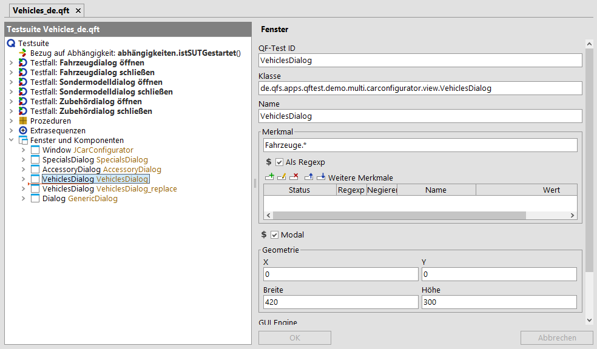

| Version 6.0.3 |
Im 'Merkmal' Attribut wird, grob gesagt, ein Text abgelegt, der für die Wiedererkennung nützlich ist und direkt mit der Komponente selbst in Verbindung steht. Dies kann entweder der Text der Komponente sein (z.B. Beschriftung auf einem Button), eine programmtechnisch zugeordnete Beschriftung/Label der Komponente (z.B. CheckBox, RadioButton, TextField) oder ein Titel ('Fenster', Dialog, TitledPanel). Bei einer 'Webseite' die URL.
Häufig ist der Wert des 'Merkmal' mit dem in 'Weiteres Merkmal'
qfs:label identisch. Dies liegt daran, dass im qfs:label
die Beschriftung für die Komponente abgespeichert wird und
dies meist der Text ist, der direkt mit der Komponente in Verbindung steht.
Die Redundanz macht dennoch Sinn, da für das weitere Merkmal der Status gesetzt werden kann:
'Ignorieren', 'Sollte übereinstimmen' oder 'Muss übereinstimmen'.
Für das 'Merkmal' gilt implizit immer der Status 'Sollte übereinstimmen'.
Es kann aber aus Gründen der Rückwärtskompatibilität nicht von qfs:label abgelöst werden.
Der Einfluss des 'Merkmal' bei der Generierung der 'QF-Test ID' ist in Generierung der 'QF-Test ID' der Komponente beschrieben. Beispiele hierzu finden Sie in Woran erkennt man eine robuste Komponentenerkennung?.
Komponenten können in einer SmartID (Preview) auch direkt über das 'Merkmal' adressiert werden, ohne Aufnahme eines 'Komponente' Knoten.
 Im Video 'Komponentenerkennung'
wird die Verwendung von regulären Ausdrücken in Fenstertiteln ab Minute 13:07 erläutert.
Im Video 'Komponentenerkennung'
wird die Verwendung von regulären Ausdrücken in Fenstertiteln ab Minute 13:07 erläutert.
In vielen Applikationen werden Sie auf die Situation treffen, dass keine eindeutigen Namen seitens der Entwicklung vergeben wurden und QF-Test dieselben Komponenten immer wieder an unterschiedlichen Stellen aufzeichnet. Die Wiedergabe dieser aufgezeichneten Komponenten funktioniert dann meistens solange sich die Geometrie des Fensters nicht drastisch verändert.
In diesem Fall ist es wahrscheinlich, dass der Titel des Hauptfensters sich immer wieder ändert, z.B. kann der Titel die aktuelle Versionsnummer, den gerade eingeloggten Benutzer oder einen Dateinamen beinhalten. Wenn Sie Ihre Tests stabil halten wollen und die unterschiedlich aufgezeichneten Fenster als einen 'Fenster' Knoten unter dem 'Fenster und Komponenten' Knoten behandeln wollen, dann selektieren Sie den 'Fenster' Knoten und editieren Sie dessen 'Merkmal' Attribut. Dort ersetzen Sie den dynamischen Teil durch einen regulären Ausdruck und haken dabei die Checkbox 'Als Regexp' an. Nun sollten Ihre Tests wieder funktionieren.
Hier sehen Sie ein Beispiel für einen regulären Ausdruck für eine Komponente des JCarConfigurators, deren 'Merkmal' mit dem Wort 'Fahrzeuge' beginnt, aber danach einen beliebigen dynamischen Teil enthalten kann:
|
|  | ||
|
| Abbildung 5.8: Ein regulärer Ausdruck im 'Merkmal' Attribut | ||
Reguläre Ausdrücke finden bei QF-Test an vielen Stellen Verwendung. Im Abschnitt 45.3 finden Sie detaillierte Informationen zu ihrer Verwendung.
| Letzte Änderung: 6.9.2022 Copyright © 1999-2022 Quality First Software GmbH |